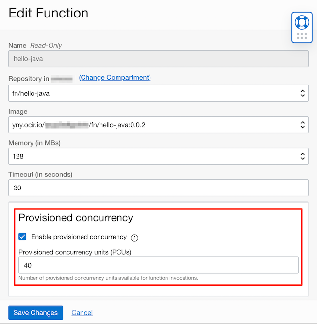
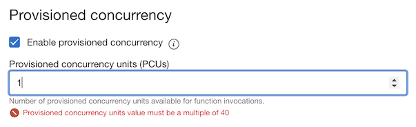

Accelerate function start-ups using provisioned concurrency
함수 실행을 위한 초기 응답지연을 최소화하기 위해 항상 provisioned concurrency 만큼 가용 환경을 지원합ㄴ다.
Function 호출시 자원에 대한 이해
Function이 배포되고 처음 호출하게 되면(cold start라고 부름), 그때 실행에 필요한 OCI 자원을 프로비저닝하게 됩니다. 그래서 처음 호출시에는 수초의 응답지연이 발생하게 됩니다. 프로비저닝이 되면, 이후 연속된 호출을 대비해 일정 시간(idle time이라 부름)동안 프로비저닝된 자원은 유지됩니다. 이때 호출은 이미 있는 자원을 사용하게 되어 바로 처리됩니다. (hot start라고 부름). 일정 시간(idle time) 동안 호출이 없는 경우 자원은 반환됩니다.
Provisioned Concurrency 기능
provisioned concurrency 기능을 사용하게 되면 지정된 동시 요청갯수 만큼은 항상 응답지연 없는 hot start가 될 수 있도록 실행 자원을 보유하게 됩니다. 대신 실행 자원을 항상 보유한 상태이므로 이때에도 비용이 추가되게 됩니다. 가격 리스트(https://www.oracle.com/cloud/price-list.html)에서는 “Provisioned Concurrency is priced at 25% of the Execution Time when unused"게 설명하고 있습니다. 즉 기존 Function에서는 사용한 만큼만 비용이 산정되었는데, provisioned concurrency을 사용시에는 사용(즉 호출)이 발생하지 않더라고, 사용시 대비 25%의 비용이 산정됩니다.
Provisioned Concurrency 사용하기
Provisioned Concurrency 사용하지 않는 경우
-
처음 호출시 또는 cold start에서 호출시만, 응답 지연이 있는 걸 알 수 있습니다.
winter@cloudshell:~ (ap-chuncheon-1)$ time fn invoke helloworld-app hello-java Hello, world! real 0m29.105s user 0m0.492s sys 0m0.034s winter@cloudshell:~ (ap-chuncheon-1)$ time fn invoke helloworld-app hello-java Hello, world! real 0m0.684s user 0m0.320s sys 0m0.026s
Provisioned Concurrency 설정하기
-
oci cli 또는 클라우드 콘솔에서 설정이 가능합니다. 클라우드 콘솔 함수 설정에서 Provisioned concurrency를 체크하고 동시 처리 유닛(PCU)를 설정합니다.

-
동시 처리 유닛(PCU)는 최소 40이며, 40의 배수여야 합니다.

-
Provisioned concurrency를 설정하면, 처음 호출시에도 실행할 자원이 준비된 hot start 상태로 응답 지연이 있는 걸 알 수 있습니다.
winter@cloudshell:~ (ap-chuncheon-1)$ time fn invoke helloworld-app hello-java Hello, world! real 0m0.528s user 0m0.203s sys 0m0.030s winter@cloudshell:~ (ap-chuncheon-1)$ time fn invoke helloworld-app hello-java Hello, world! real 0m0.503s user 0m0.238s sys 0m0.020s
이 글은 개인으로서, 개인의 시간을 할애하여 작성된 글입니다. 글의 내용에 오류가 있을 수 있으며, 글 속의 의견은 개인적인 의견입니다.